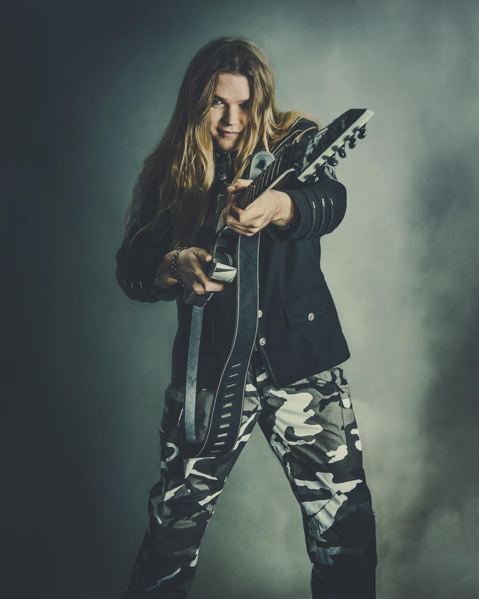

La Banda
'Sabaton' es una banda fundada en Falun, Suecia en 1999. A través de su musica de estilo 'Power Metal' buscan transmitir historias bélicas basadas en hechos reales de gran sentido emocional para el mundo con una excelente calidad musical. Esto, lo ha diferenciado fuertemente de el resto de bandas del estilo, ya que no existen otras bandas que hayan basado toda su discografía en la Historia, la que es contada de una manera muy fiel y precisa a través de sus canciones.
Su éxito se ha expandido fuertemente en los últimos años, siendo sus últimos albumes fuertemente posicionados en las listas mundiales, en especial teniendo en cuenta su género musical, que no suele ser el mas escuchado en la actualidad. Se encuentran actualmente realizando tours mundiales y llenando estadios de todo el mundo con su increible musica y expandiendo la historia a lo largo y ancho del mundo.
Joakim Brodén
Joakim "Jocke" Brodén es el vocalista principal, tecladista y guitarrista ocasional de la banda, y tambien, la cara principal de la misma. Es uno de los fundadores originales de la banda, en la que se ha mantenido desde sus inicios. Hijo de padre sueco y madre checa, desde pequeño se vió interesado por la musica metal, segun sus propias palabras, en especial desde que vió el video musical de "We're Not Gonna Take It" de la banda Twisted Sister.
Con su increible voz de barítono, es el encargado de transmitir al público las increibles historias escritas en la música de la banda, trabajo que realiza de manera excepcional. Joakim ha declarado varias veces que su trabajo en la banda iba a ser solo de tecladista, pero al tener la banda problemas para encontrar un cantante principal, le dieron a él la oportunidad de serlo y tras su increible trabajo, se le asignó este puesto de manera permanente.
Pär Sundström
Pär Sundström es el bajista principal de la banda. Nacido en la propia Falun, donde se creó la banda, es uno de los fundadores originales de la misma, y junto a Joakim, los unicos de esta que aún continúan en ella. Antes de la llegada de Joakim a la banda, Pär funda junto a Rikard Sundén la banda Aeon, que tras la llegada de Joakim y Oskar Montelius pasaría a llamarse 'Sabaton'.
Además es el mánager de la banda, y tambien suele participar en algunos coros. Pär ha declarado que su amor por el metal viene inspirado especialmente por las bandas 'Iron Maiden', 'Scorpions', 'Guns N'Roses' entre otras.
Hannes Van Dahl
Hannes van Dahl es el baterista de la banda. Se unió a la misma en 2013, tras la salida de Robban Bäck, quien abandona su puesto como baterista ya que estaba a punto de ser padre. Hannes nace un 18 de enero de 1990, con el nombre "Karl-Hannes Dahl". Sin embargo, al llegar a su vida adulta, decide cambiarlo oficialmente por Hannes Van Dahl.
Antes de su llegada a 'Sabaton', Hannes había pertenecido a la banda 'Evergray'. El primer album de 'Sabaton' con Hannes como baterista es "Heroes", el que luego seria presentado en vivo en su primer tour "Swedish Empire Tour" en 2014. Hannes se encuentra en una relacion con Floor Jansen, vocalista de la banda 'Nightwish', con la que tuvo una niña en marzo de 2017.
Chris Rörland
Chris Rörland es uno de los guitarristas principales de la banda. Nació, al igual que Pär, en Falun pero un 27 de diciembre de 1986. Chris empezó tocar guitarra a los siete años, influenciado principalmente por legendarios guitarristas como Adrian Smith, Joe Satriani, Yngwie Malmsteen y Steve Vai. Chris se une a 'Sabaton' en 2012. Él y Thorbjörn Englund se unieron a Sabaton en reemplazo de Rikard Sundén y Oskar Montelius, dos de los fundadores originales.
Además de guitarrista, Chris es también diseñador gráfico e hizo el servicio militar como conductor de municiones. Ha declarado que su amor por la historia no era algo que tuviera desarrollado antes de entrar a la banda, pero que al correr del tiempo, se ha ido enamorando de la misma tanto como sus fundadores.
Tommy Johansson
Tommy Johansson es otro de los guitarristas de la banda, aunque también suele participar como vocalista en algunas canciones. Nació en Boden, Suecia, un 26 de octubre de 1987. Se une a Sabaton en 2016, tras la salida de Thobbe Englund. Es, asi, la adición mas nueva a la banda.
Anteriormente a unirse a Sabaton, especificamente en 2004, Thommy funda la banda 'ReinXeed', la cual luego debería renombrar a 'Majestica' por problemas con el sello. El aún continua en ella, siendo el vocalista principal de la misma. Además, Thomas ha participado en canciones de Nightwish y Narnia, prestando su voz para coros o estrofas específicas con su excelente voz de tenor.